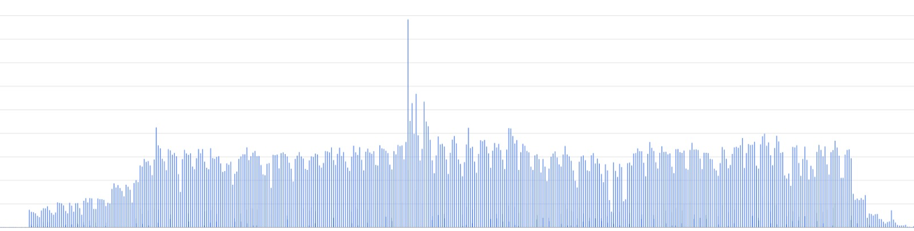
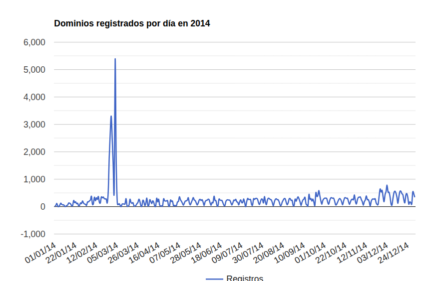
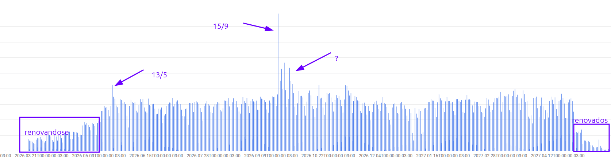
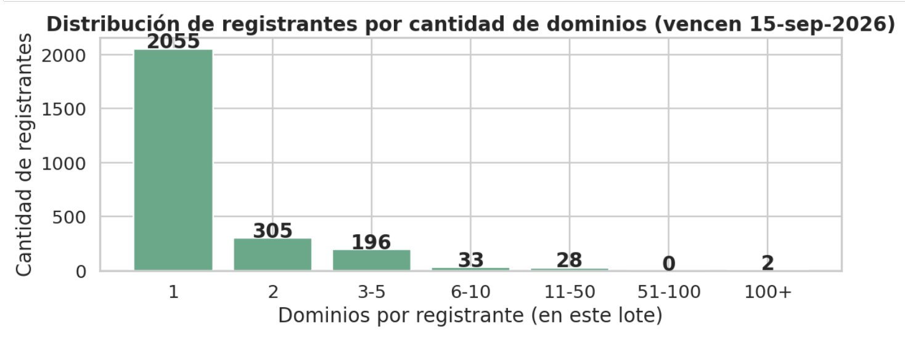
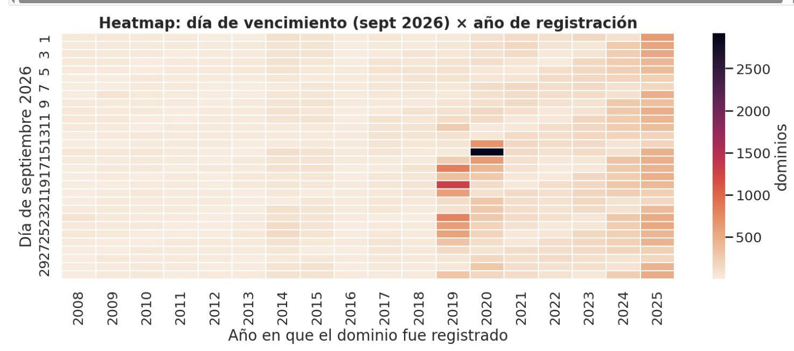
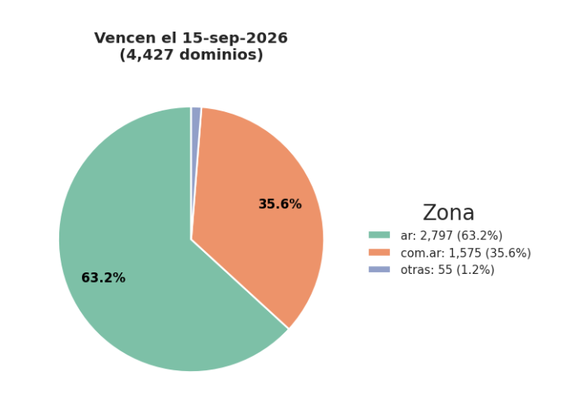
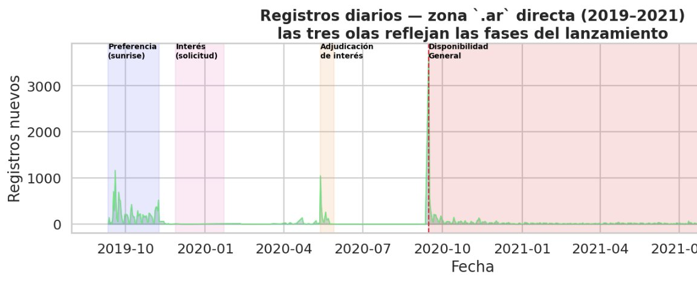
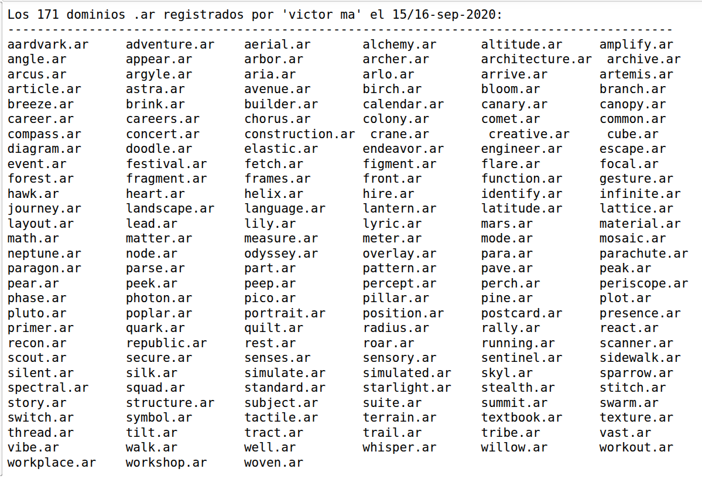
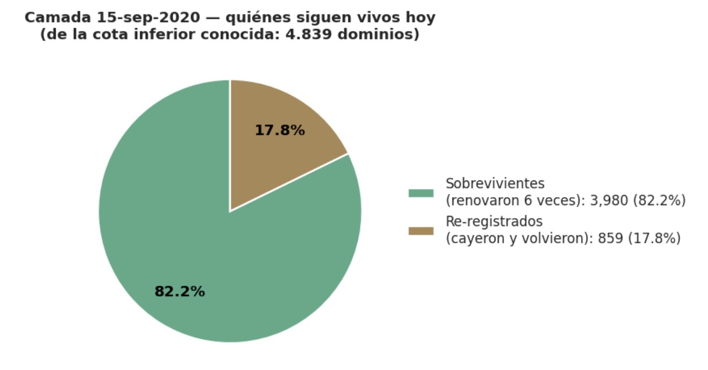

Originalmente publicado como hilo en Twitter.
Estos son los más de 500.000 dominios que seguimos (casi la totalidad existentes hoy) ordenados por fecha del próximo vencimiento. Cada barra es un día de año.
¿A alguien se le ocurre que es ese pico?
¿Se imaginan?
Respuesta mañana.

Vamos con algunos sospechosos.
En 2014 los dominios dejaron de ser gratis. Antes de eso uno podia registrar todos los dominios que queria y sin costo.
Habia más de 2 millones de dominios registrados.
El último día y los anteriores fue un caos. Una hecatombe, una debacle total. Una seguidilla de hechos bochornosos donde la gente daba de baja sus dominios para volver a registrarlos y tener unos meses más sin pagar.

Nuestro primer sospechoso fue este. Imaginamos que esa distorción se había arrastrado hasta nuestros dias.
Pero no fue así, eso fue un 5 de marzo y el día raro es el 15 de septiembre (además de algunas otros días).

Esos registros luego de este momento rateril de la historia de internet argentina cayeron mayormente al año siguente.
Eso no explica el pico actual el 15 de septiembre.
¿Y entonces?
¿Fue algun registrante que hizo muchos registros ese día?
Estos son la cantidad de dominios de ese día por registrante.
Solo dos registrantes ese día hicieron más de 100 registros.

Uno de ellos fue Dattatec (que es el mayor registrante de dominios en Argentina) que en general registra año a nombre de terceros.
Al otro registrante ya lo vamos a ver. El motivo no fue alguien entrandso bruscamente al mercado.
¿Y si vemos en que año se registraron?
Estos son los dominios que vencen en septiembre de 2026 (cada día en eje Y) por el año en que fueron registrados
Algo paso en 2019 y despues en 2020. Raro, ¿un evento bianual?
¿Ahora si te acordas?

Sigamos: Estos son los dominios que vencen el 15 de septiembre por zona
La mayoría de los dominos en Argentina son .com.ar (el 80% aprox según https://nic.ar/es/dominios/estadisticas)
Pero ese día la proporcion cambia rotundamente.

Claro! El nacimiento de los dominios .AR!
Las fases de lanzamiento fueron:
1- Los que tenian un .com.ar podía reclamar el .ar (septiembre 2019)
2- La gente podía manifestar su interes en algun dominio.
3- Se analizaban y se asignaban esos dominio de interés (13 de mayo de 2020)
4- Se abrieron al público general el registro de dominios en la zona .AR

Quien fue ese gran registrante ese día?
Fue Victor Ma, extranjero (basandonos en su CUIT)
Victor sigue siendo hoy registrante. Aca podes ver más

¿Que pasó con esa camada de los nuevos .AR abiertos al público?
Más del 80 renovo luego de 6 años, al parecer fue una buena idea.
Había y sigue habiendo interés real en esos dominios.
